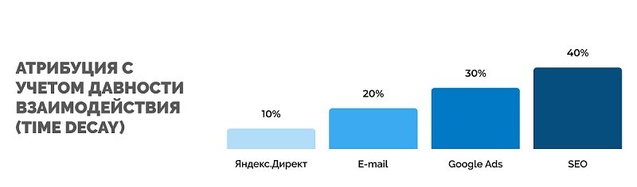

Если вам хоть один раз приходилось анализировать трафик, вы уже сталкивались с атрибуцией, даже если не знали о ней. А ведь существует множество моделей, каждая из которых применяется в определенных условиях. В этой статье рассмотрим, что такое модели атрибуции, какие они бывают и для чего используются.
Что такое модель атрибуции
Модель атрибуции – это правило, по которому источники трафика распределяются по точкам взаимодействия с клиентами в зависимости от степени вклада каждого из них в конверсию.
Чтобы было понятнее, рассмотрим простой кейс-пример.
Компания «Рога и копыта» продает украшения ручной работы через свой сайт. Для продвижения использует аккаунт в Instagram (Facebook), контекстную рекламу, ремаркетинг. Потенциальный клиент проделывает примерно такой путь:
{kind=link}
- Видит фото товара в Instagram и решает подписаться. Регулярно просматривает посты в ленте. Товар вызывает интерес, и пользователь заходит в каталог.
- По названию компании находит ее в поиске Google и переходит на сайт из контекстной рекламы, но заказ временно откладывает.
- Благодаря ретаргетингу Яндекс Директ повторно сталкивается с товаром через пару дней. В этот раз компания ввела акцию и предлагает более выгодную цену.
- Человек кликает по объявлению ремаркетинга, попадает на сайт и делает заказ.
Такая цепочка предполагает 3 касания с брендом, предшествующие заказу: Instagram, контекстная реклама, ремаркетинг. Каждое из касаний имеет свою ценность, которую и помогает определять атрибуция.
Зачем нужна атрибуция
В большинстве сфер от момента первого контакта с клиентом до продажи проходит несколько этапов, которые отражены в типичной воронке:
{kind=link}
- Знакомство с компанией.
- Стадия раздумий: выбор продукта, оценка необходимости купить, сравнение цен, отзывов и т. д.
- Покупка или конверсия.
- Повторные разы конверсии (удержание).
Удерживать покупателей всегда гораздо дешевле, чем искать и привлекать новых, за счет применения более целевых рекламных кампаний, оценить эффективность которых значительно проще.
Атрибуция в бизнесе играет важную роль:
- помогает так распределить бюджет между рекламными каналами, чтобы повысить их эффективность, в частности ROI и ROAS, а также снизить финансовые риски;
- повышает персонализацию для предложения клиентам в удобных для них каналах именно тех товаров, которыми они интересуются;
- позволяет выстроить длительные и выгодные отношения с потребителями для их удержания, улучшения персонализации сервиса и продаж.
Как атрибуция влияет на оптимизацию
Возможности рекламы можно грамотно оценить, если во всей цепочке взаимодействия с клиентом определить ключевой заход на сайт. Это может быть одна фраза, которая определяет поведение целевой аудитории в рамках РК. Когда меняется модель атрибуции, происходит изменение в значимости ключевых слов, поэтому затраты на рекламу тоже необходимо пересматривать. Выглядит это примерно так:
- Меняется модель атрибуции.
- Конверсии перераспределяются в системе, и там же происходит переоценка эффективности ключевых запросов.
- Выполняем перерасчет ставок, оптимизируем рекламу.
Виды моделей атрибуции
Когда компания уже давно на рынке и использует разные каналы продвижения, важно знать, какие из них действительно приводят к покупке прямо или косвенно. В этом случае выбор моделей атрибуции должен быть продуманным и тщательным. Если же фирма только выходит на рынок, ей важно заявить о себе, и для этого могут понадобиться совсем другие каналы.
Недооценка какого-либо канала может стать причиной значительного сокращения продаж из-за «закрытия» важного этапа, который не приводил к конверсии прямо, но подталкивал клиентов к переходу на конверсионную ступень воронки.
Рассмотрим, какие бывают модели атрибуции, как они работают и когда их нужно применять.
Модели на основе позиции
По первому клику (First Interaction или First Click)
Ценность конверсии относится к самому первому источнику, где пользователь впервые столкнулся и познакомился с брендом.
Подходит для:
- компаний, которые стремятся к узнаваемости;
- бизнес-проектов, которым нужно расширить охват ЦА;
- маркетологов в поиске площадок, которые дадут конвертируемый трафик.
|
|
|
|
|
По последнему клику (Last Interaction или Last Click)
Наиболее ценным в плане конверсии считается канал, предшествующий конверсии. При этом влияние других каналов, которые участвовали в достижении результата, не учитывается.
Метод идеален для:
- компаний с коротким циклом продаж;
- проектов, использующих цепочку из 1-3 рекламных каналов.
|
|
|
|
|
По последнему непрямому клику (Last Non-Direct Click)
Как и в предыдущей модели, самым ценным в плане конверсии считается завершающий канал в цепочке. Однако, если это был прямой переход, вес передается источнику, который находится в цепочке перед ним. Суть в том, чтобы отсеять потребителей, которые уже были знакомы с брендом и перешли на сайт по прямой ссылке.
Метод актуален для:
- маркетологов, которым необходимо понять, как работает выбранный платный канал;
- бизнес-проектов, не стремящимся к узнаваемости бренда.
|
|
|
|
|
По последнему клику в Google Рекламе (Last Google Ads Click)
Если пользователь кликнул по объявлению в Google Ads, ему будет присвоена максимальная ценность. Этот метод стоит выбирать компаниям, которые используют только платную гугл-рекламу и хотят найти наиболее эффективное объявление.
|
|
|
|
|
Линейная модель атрибуции (Linear model)
В этой модели ценность от конверсии делится равномерно между всеми звеньями в цепочке. Применять ее можно предприятиям с длинным циклом продаж и проектам (преимущественно из сферы B2B), в которых важно постоянно быть на связи с клиентом независимо от этапа воронки.
|
|
|
|
|
С учетом давности взаимодействия (Time Decay)
С каждым новым звеном в цепочке ценность от конверсии возрастает. Первый источник трафика считается наименее ценным, а конечный важен больше всего. Это хороший вариант для ограниченных во времени бизнес-проектов, которым необходимо понять, насколько эффективны рекламные кампании.

|
|
|
|
|
На основе позиции (Position Based или U-образная)
Ценность между источниками распределяется по такому принципу, чтобы большую долю веса получили первое и последнее звенья в цепочке: каналы, которые вовлекли пользователя в воронку и закрыли сделку. Данный метод отлично идет компаниям, которые ставят на одну ступень потребность в привлечении новой аудитории и превращение уже привлеченных пользователей в клиентов.
|
|
|
|
|
W-образная модель
В отличие от U-образной модели, здесь вес распределяется между крайними звеньями цепочки и одним из срединных касаний, которое могло подтолкнуть пользователя к совершению целевого действия. Метод принесет результат бизнесу, использующему рекламные кампании с лидогенерацией.
|
|
|
|
|
Z-образная модель
Здесь ценность конверсии равномерно распределяется между первым, последним, промежуточным касаниями, а также этапом, на котором пользователь превратился в лида (оставил контакты, оформил подписку на рассылку или блог и т. д.). Этот вариант покажет, насколько эффективно функционируют предприятия с хорошо налаженной совместной работой отделов маркетинга и продаж.
|
|
|
|
|
Post-click конверсия
Модель позволяет заложить разное количество времени на принятие решения пользователем в той или иной ситуации в зависимости от сферы бизнеса и продукта. Идеальна для компаний, которые продают дорогие продукты (автомобили, недвижимость, строительство)
|
|
|
|
|
Post-View конверсия
Модель предполагает использование невидимого тега pixel tag, который собирает статистику о последующих действиях пользователей, увидевших рекламу, даже в том случае, если они в итоге не кликнули по ней. Подходит компаниям, которые заботятся об имидже, и бизнес-процессам, требующим оптимизации.
|
|
|
|
|
Пользовательская модель
После глубокого анализа значительного массива данных вес каждого взаимодействия с покупателем указывается вручную. Применяя эту модель, вы сможете посмотреть, насколько эффективно работают бизнес-процессы с долгим циклом продаж и компании с продвинутыми технологиями, хорошими аналитиками и маркетологами.
|
|
|
|
|
Алгоритмические модели
На основе данных (Data-Driven Attribution)
Эта модель работает без предварительно заданных условий и определяет ценность каналов на основе Вектора Шелпи и пользовательских значений. Эффективность каждого канала и его влияние на конверсию оценивается независимо от положения конкретного звена в цепочке. Используют ее маркетологи, которые хотят выделить максимально эффективные ключевые фразы и кампании для рационального распределения бюджета. При этом, когда нужно узнать, на каком месте в цепочке находится канал, такая модель не покажет реального положения дел.
|
|
|
|
|
На основе Цепей Маркова (Markov Chains)
Модель помогает понять, как изменится конверсия, если тот или иной канал будет отсутствовать в цепочке. Оценка осуществляется путем поочередного удаления каждого источника трафика и анализа числа транзакций после этого. Подходит компаниям, которые хранят все данные в одной системе.
3 этапа расчета ценности:
- Расчет вероятности конверсии при удалении каждого из каналов.
- Расчет количества потерянных конверсий при удалении конкретного канала.
- Расчет ценности каждого канала.
|
|
|
|
|
Использование нескольких моделей атрибуции
В некоторых случаях, когда стоит задача средней или высокой сложности, использование одной модели атрибуции может стать причиной ложных выводов. Если использовать одновременно несколько моделей атрибуции, можно снизить риск ошибок и взглянуть на ситуацию с разных сторон.
Маркетологи экспериментальным путем находят эффективные способы принятия решений, наблюдая, как разные методы влияют на общие результаты бизнес-проектов.
Факторы, влияющие на выбор моделей атрибуции
Выбор моделей атрибуции напрямую зависит от поставленных задач. Чтобы не ошибиться, важно определиться со следующими параметрами:
{kind=link}
- Цикл сделки – отражает длительность взаимодействия с покупателем от первого касания до закрытия сделки. Бывает:
- Короткий – клиент совершает покупку меньше, чем за 3 касания, в этом случае хорошо подходит модель Last Click;
- Длинный – предполагает более 3 контактов с пользователем, чаще требует использования разных моделей атрибуции.
- Особенность работы канала – прямое предложение перейти по рекламной ссылке или нативное воздействие на пользователя с помощью интересного ему материала. В первом случае подходят классические модели на основе клика, во втором требуется больше аналитической работы.
- Число каналов – один или несколько. Оценить один канал легко. При большом наборе каналов может потребоваться целый ряд моделей атрибуции даже при коротком цикле продаж.
- Маркетинговая задача – продажи, рассказ о бренде, привлечение лидов, удержание пользователей и т. д. В зависимости от того, какая стоит задача, выбирается модель оценки.
Также полезно сформулировать следующие тезисы:
- приоритетные конверсии;
- число шагов для совершения транзакции;
- присутствует ли фактор сезонности;
- время, в течение которого пользователь принимает решение;
- степень узнаваемости бренда;
- проводилась ли глубокая аналитика, есть ли данные статистики о конверсиях;
- насколько конкурентная ниша.
Как пересматривать модель атрибуции
Любое изменение перечисленных выше параметров говорит о том, что используемую модель атрибуции следует проверить и пересмотреть.
Что может свидетельствовать о снижении эффективности модели атрибуции:
{kind=link}
- overlap каналов перешагнул барьер в 15%;
- скачкообразное изменение числа посетителей из органики;
- рекламные сети и внутренняя система аналитики сильно различаются по моделям;
- значительная оптимизация или отключение одного канала ухудшает работу других;
- изменение масштабов канала, приводящего пользователей из органики, провоцирует снижение роста численности новых посетителей;
- мониторинг корреляции каналов без учета их влияния друг на друга.
Модели атрибуции в Google Analytics
В Google Analytics представлено сравнительно большое количество возможностей моделирования атрибуций.
{kind=link}
Чтобы не наделать ошибок в работе с ними, важно понимать ряд особенностей.
- Google Analytics использует по умолчанию не такие модели атрибуции, как Google Ads, и дает больше конверсий.
- Выбранная модель атрибуции применяется в пределах аккаунта для всех каналов, с которыми пользователь столкнулся на пути к конверсии.
- Код транзакции лучше создавать с использованием кода Google Ads, т. к. он учитывает ассоциированные конверсии, а также помогает собирать статистику при работе автоматических стратегий и в рекламном аккаунте.
- Независимо от настроек атрибуции, системно применяется модель Last Click для видеокампаний и кампаний в КМС.
- Стандартную модель Last Non-Direct Click в Google Analytics изменить нельзя. Определить показатели при использовании иных моделей можно путем их сравнения.
В Google Analytics нельзя изменить атрибуцию по умолчанию, а также иные типовые модели, но любую из них можно модифицировать. Впоследствии стандартную и измененную модели можно сравнивать между собой, чтобы оценить эффективность кампаний.
Для этого следует:
- В меню администратора в категории «Представление» выбрать «Настройки многоканальных последовательностей», далее – «Создать модель атрибуции».
- В выпадающем перечне будет доступно 5 типовых моделей атрибуции, которые можно модифицировать.
{kind=link}
{kind=link}
Параметры, которые можно изменить:
- период ретроспективного анализа (максимальный предел – 90 суток);
- ценность по типам взаимодействий (недоступно для моделей 1-го и последнего взаимодействия);
- пользовательское распределение ценности.
Где смотреть отчеты по модели атрибуции
Результаты сравнения разных моделей атрибуции доступны в категории Конверсии – многоканальные последовательности – Инструмент сравнения моделей.
{kind=link}
Здесь можно выбрать для анализа следующие параметры:
- тип конверсии;
- тип каналов трафика – все или только Google Рекламу;
- период ретроспективного анализа.
Также доступны фильтры сравнения моделей, которые помогают определить ценность каналов.
Проект атрибуции
Google Analytics предлагает отличный инструмент для анализа конверсий – проект атрибуции. Он может использоваться для грамотного распределения рекламного бюджета и построения полной маркетинговой стратегии.
{kind=link}
Возможности:
- сравнение моделей атрибуции одновременно с разных ресурсов;
- применение атрибуции на основе данных, в т. ч. при использовании бесплатной аналитики.
Чтобы модель была доступна для сравнения, нужно иметь минимум 1000 конверсий за последние 28 дней для соответствующего действия.
Как еще можно оценивать модели атрибуции в Google Analytics
Аналитики практикуют два способа:
- Настройка своих моделей. За основу берется стандартная модель и вручную дополняется актуальными для бизнес-проекта параметрами.
- Сравнение. Сравнивать между собой можно любые модели. При этом можно выявить недооцененные источники и ключевые слова.
{kind=link}
{kind=link}
Модели
Простые:
- по первому взаимодействию – First Interaction – весь вес присваивается первому источнику;
- по последнему взаимодействию – Last Interaction – вся ценность отдается последнему источнику;
- по последнему непрямому клику – Last Non-Direct Click – самым ценным считается последний источник, кроме случаев прямого перехода;
- по последнему клику в Google Рекламе – Last Google Ads Click – наиболее весомым окажется последний рекламный источник.
Другие:
- линейная модель – Linear – равномерное распределение ценности между всеми точками касания;
- с учетом давности взаимодействий (временной спад) – Time Decay – вес распределяется по мере возрастания от самого дальнего источника к наиболее близкому к транзакции;
- с привязкой к позиции – Position Based – большую ценность получают первый и последний звенья цепочки;
- с привязкой к данным – Data-driven – вес распределяется системой на основании собранной ранее статистики о наиболее частых источниках конверсии;
Кастомные:
- по количеству хитов в сессии – помогают оценить активность пользователей, которые приходят из конкретного источника;
- на основе воронки – Funnel-based – основной вес распределяется между каналами, которые переводили пользователя на новую ступень воронки.
Собственная модель атрибуции:
- создается на базе стандартных моделей, если они не могут решить поставленную задачу.
Модели атрибуции в Google Ads
У Гугл Рекламы свой набор моделей атрибуции, которые хоть и похожи по названию на модели Google Analytics, но отличаются от них по принципам использования и настройки.
{kind=link}
Модели атрибуции в Google Ads используются только для торговых и поисковых рекламных кампаний. Они не собирают данные о переходах из органической выдачи, рассылок и т. д.
По последнему клику – приоритет отдается ключевому слову, которое привело к транзакции, или последнему клику по рекламе.
По первому клику – ключевая фраза или объявление, по которому кликнули раньше всего, получает наибольший вес.
Линейная атрибуция – все рекламные ссылки, которые способствовали конверсии, имеют одинаковую ценность.
С учетом давности взаимодействия – чем ближе касание к моменту конверсии, тем больший вес ему отдается.
С привязкой к позиции – первый и последний контакт или ключевое слово в цепочке взаимодействий получают 40% ценности.
На основе данных – вес конверсий распределяется согласно имеющейся статистики по конкретному действию. Для использования этой модели в течение 30 дней должно быть собрано не менее 600 конверсий и 15 000 переходов из поиска.
Как настроить отчет модели атрибуции в Google Ads
При создании целей в Google Ads или импорте их из Google Analytics можно выбрать атрибуцию, которую система будет считать при расчете заданной конверсии. Впоследствии ее можно изменить и сравнить с другими моделями.
Для этого нужно авторизоваться в аккаунте Google Ads и выполнить следующие действия:
- Справа вверху кликнуть по значку инструментов и выбрать «Атрибуция» в разделе «Отслеживание».
- В левом меню нажать «Сравнение моделей» и в выпадающем списке «Параметр» отметить нужный вариант.
- Затем указать параметры: действие-конверсия и период ретроспективного анализа.
- Далее в выпадающем списке выбираем подходящую модель и сохраняем изменения, нажав на соответствующую кнопку.
{kind=link}
{kind=link}
{kind=link}
Чтобы изменить модель атрибуции для текущего действия-конверсии, следует:
- Авторизоваться в аккаунте Google
- Справа вверху кликнуть по значку инструментов и выбрать «Конверсии» в разделе «Отслеживание».
- Кликнуть на название нужной конверсии в таблице и нажать «Изменить настройки».
- Из выпадающего списка «Модель атрибуции» выбрать подходящий вариант.
- Кликнуть «Сохранить» и «Готово».
Модели атрибуции в столбцах отчетов
Система позволяет спрогнозировать результаты при новой модели атрибуции. Для этого для нынешней модели необходимо в таблице отчетов добавить нужные столбцы в разделе «Атрибуция».
{kind=link}
В столбцах отображаются данные с пометкой «текущая модель» и без нее. Сравнивая их, можно оценить, насколько новая модель подходит для решения бизнес-задач.
Статистика включает также данные, которые не поддаются влиянию моделей атрибуции.
Модели атрибуции Яндекс Метрики
Всего четыре модели атрибуции доступно в Яндекс Метрике, но применять их можно в разных отчетах. Для этого предусмотрено удобное переключение на панели сверху.

Последний значимый переход. Наивысшая ценность присваивается последнему значимому визиту, т. е. тому, который был выполнен по рекламной ссылке, партнерской ссылке или через поисковые системы. Незначимыми считаются внутренние и прямые переходы на сайт.
Последний переход из Директа. Согласно этой модели, самым главным и ценным считается последний переход на сайт, совершенный через рекламу в Директе. Все остальные визиты не учитываются.
Первый переход. Самый первый визит на сайт в течение 6 месяцев считается наиболее ценным источником конверсии. Модель применима в бизнес-проектах, в которых покупателям требуется много времени для принятия решений.
Последний переход. Учитывается только последний источник в конкретный момент. Это нужно для анализа технической составляющей сайта. История переходов здесь не сохраняется, а все оставшиеся визиты пользователей игнорируются.
Модели атрибуции Яндекс Директ
Зайдя в Директ, можно увидеть все те же модели, которые выше были описаны для Метрики. Это связано с отсутствием своих настроек атрибуции. Работая совместно с Метрикой, Директ берет их из ее отчетов и формирует свои сводки на основе кликов по рекламе, не учитывая другие визиты на сайт.
Применять можно двумя способами:
- Аналогично Метрике путем создания отчета в Мастере отчетов.
- Выбрав атрибуцию в стратегиях РК. В этом случае будут учитываться те конверсии, которые Директ выберет из Яндекс Метрики в процессе оптимизации.
- Путем выбора модели атрибуции в рекламной кампании с оплатой за конверсии:
{kind=link}
{kind=link}
- Последний переход из Директа – все конверсии после перехода по рекламе будут оплачены. Модель повышает расходы, но учитывает все возможные конверсии;
- Первый переход – оплата назначается только за конверсии покупателей, перешедших с Директа;
- Последний переход – оплачиваются только конверсии клиентов, которые завершили свой путь по цепочке взаимодействий, перейдя по рекламе с Директа;
- Последний значимый – оплачиваемыми являются конверсии, совершенные после перехода с Яндекс-рекламы, но предшествующие следующему значимому переходу.
Таблица сравнения моделей атрибуции: Яндекс.Метрика vs. Google Analytics
Предлагаем краткую сравнительную таблицу с моделями атрибуции на двух самых распространенных платформах аналитики – Google Analytics и Яндекс Метрика.
|
Google Analytics |
Яндекс.Метрика |
Наивысшая ценность |
Когда применять |
|
Первое взаимодействие |
Первый переход |
Первый источник |
При необходимости оценить точки касания |
|
Последнее взаимодействие |
Последний переход |
Последний источник |
Для выявления проблемных страниц; когда пользователи быстро принимают решения |
|
По последнему непрямому клику |
Последний значимый переход |
Последний источник, кроме прямых переходов, а у Метрики также кроме переходов с сохраненных страниц и внутренних переходов. |
Когда нужно исключить источники с низкой значимостью |
|
Последний клик в Google Рекламе |
Последний переход из Директа |
Последний переход с рекламы в Директе или Ads соответственно |
При оценке эффективности РК |
|
Линейная модель |
- |
Равномерное распределение между всеми источниками трафика |
Когда все каналы важны и задействованы в привлечении клиентов |
|
Временной спад |
- |
По мере приближения источников к конверсии их ценность возрастает |
При оценке эффективности акций и коротких РК |
|
Модель на основе позиций |
- |
Первый и последний источники |
Когда нужно узнать наиболее конвертирующий канал, а также откуда клиенты узнают о фирме |
|
Модель на основе данных |
- |
Автоматическое распределение ценности системой при достаточном количестве исходных данных |
Для выявления наиболее действенных источников и ключевых слов |
Преимущества и недостатки моделей атрибуции в системах веб-аналитики
Как и все инструменты, модели атрибуции имеют плюсы и минусы. Попытаемся разобраться с ними.
|
Преимущества: |
Недостатки: |
|
Путем распределения общей ценности конверсии между разными используемыми ключевыми фразами или рекламными объявлениями, модели атрибуции позволяют:
|
Использование стандартных моделей атрибуции без глубокого погружения в маркетинг и аналитику может приводить к некоторым сложностям:
|
Как сменить модель атрибуции
Изменить выбранную модель атрибуции в Google можно при импорте конверсий или сразу после него. Для этого:
- зайдите в настройки;
- выберите категорию отслеживаний;
- перейдите в конверсии;
- задайте цикл.
{kind=link}
Сделать то же самое в Яндексе при стандартных настройках невозможно. Изменить атрибуцию здесь можно путем выбора нужного алгоритма в параметрах отчета.
Примеры применения разных моделей атрибуции
Пример 1. Мини-салон красоты с хорошими мастерами
Салон оказывает услуги, в которых женщины нуждаются регулярно. Высококлассный сервис и качество услуг говорят за себя: достаточно одного сеанса, чтобы клиент остановил свой выбор и стал постоянным.
Задача – поиск новых клиентов.
Подходящая модель – по первому клику. Однажды переходя на сайт, клиент решает воспользоваться услугой, а первое касание является решающим.
Пример 2. Интернет-магазин автозапчастей
Ниша высококонкурентная, товары неуникальные, потребность в них периодическая.
Задача – убедить посетителя потратить деньги именно в этом магазине, хотя тот же товар есть еще у десятка других продавцов.
Подходящая модель – по последнему непрямому клику.
Пример 3. Продажа элитного жилья от застройщика
Недвижимость – крупная разовая покупка. При выборе жилья покупатель долго думает, процесс выбора может занимать до года.
Задача – подталкивать клиента к покупке с помощью всех доступных каналов и при каждом касании.
Подходящая модель – линейная.
Это лишь примеры использования разных моделей атрибуции, однако на практике рекомендуется проводить анализ по всем атрибуциям, чтобы вовремя выявлять сильные и слабые стороны кампании.
Частые вопросы про модели атрибуции
Для этого применяют модели last click и top score. По результатам можно получить отчет, где кампании будут разбиты на 3 категории:
- требующие кардинальной переработки или отключения;
- которые можно оставить как есть или усилить;
- которые можно доработать.
- При коротком цикле сделки, коротком пути до продажи и 2-3 каналами продвижения идеально подходит модель Last click.
- Когда нужно увеличить охват, расширить воронку, привлечь на сайт потенциальных потребителей, повысить узнаваемость ТМ, подойдет модель First click.
- Если бизнес имеет длинный цикл сделки и работает в сегменте В2В, можно использовать Linear model.
- Когда самыми значимыми являются первое и последнее касания, придется кстати Position-based.
- Бизнес-проектам, в которых важно оценить, насколько эффективны краткосрочные РК, подойдет Time Decay.
Самые точные и достоверные результаты можно получить, используя вероятностные модели. Они показывают, как тот или иной канал в цепочке взаимодействий с клиентом влияет на вероятность конверсии.
Проанализируйте отчеты из сервисов аналитики, сравните, как работают текущие модели атрибуции. При этом важно учесть особенности поведения потребителей и опыт ведения бизнеса.
- Наличие ответственного специалиста.
- Точность определения пути клиентов.
- Применение онлайн- и оффлайн-данных.
- Качество исходных данных.
- Правильный выбор модели на основе тестирования и сравнения атрибуций.
Помогает не только выявить эффективный канал, но и обозначить, где конкретно он эффективен. Отсутствуют ограничения по минимальному объему исходных данных. Модель фиксирует новых пользователей, а также тех, кто вернулся на ресурс, показывая подробную информацию по каждой транзакции. Отображает уровень исполняемости сделок из корпоративной CRM, учитывает маржу.
Заключение
Интернет-среда постоянно меняется, и модель атрибуции не может долгое время оставаться без изменений. Чтобы вовремя подстроиться под реалии и получать актуальную информацию, рекомендуем регулярно перепроверять и при необходимости пересматривать каждую модель.
- Следите за органикой, за ней часто скрываются платные рекламные каналы. Изменение показателей органики может свидетельствовать о том, что используемые модели атрибуции больше необъективны.
- Не допускайте, чтобы Overlap превышал порог в 10-15%. Если это случилось, значит каналы сильно пересекаются, а модель атрибуции требует модификации и тестов на инкрементальность.
- Обращайте внимание на внешние изменения. По мере снижения взаимодействия клиентов с рекламными каналами точность классических моделей будет снижаться.
- Следите за изменениями и перепадами числа посетителей из органической выдачи.
- Фиксируйте разницу между моделями рекламных сетей и моделями атрибуции внутренней аналитической системы.
- Обращайте внимание на ситуации, когда после существенной оптимизации или отключения одного канала ухудшается работа других.
Оставить комментарий
Войти с помощью